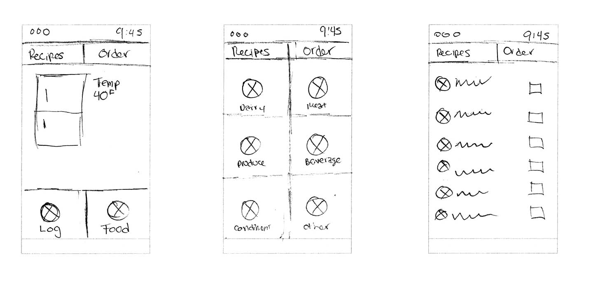
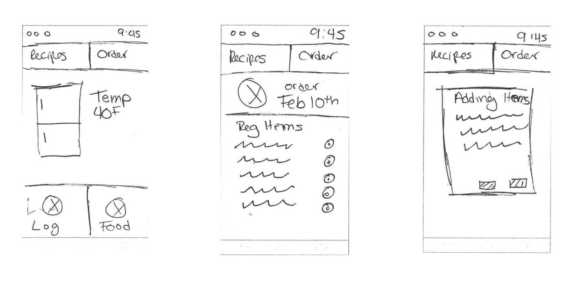
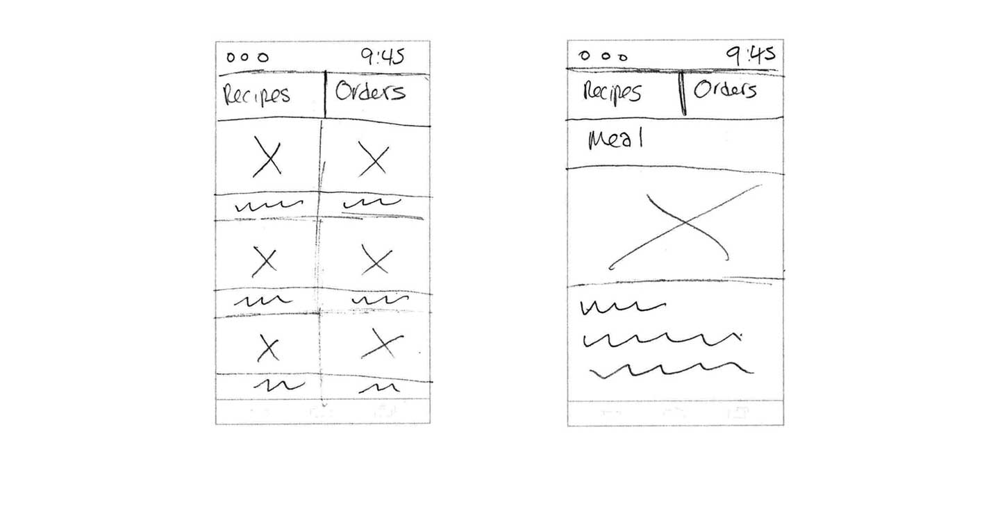

Concept Overview
Users need a personal assistant in the kitchen due to their busy schedules.
Fridgeory
- keeps track of food in fridge
- notifications for expired or low inventory
- reorders food
- recipes based on ingredients in fridge
Users need a personal assistant in the kitchen due to their busy and hectic schedules. They don’t have time to deal with small repetitive tasks.
Fridgeory allows the users to keep track of their food that’s in the fridge. The app will notify users when a food item is about to expire or running low. Fridgeory will then reorder the food through an online grocery store of their choice.
Users can also look up recipes based on the ingredients in their fridge.
Personas Overview
Steven Foster, 25
- Hardworking
- Workaholic
- Foodie
- No time to go grocery shopping
Steven Foster
- Occupation:
- Web Developer
- Age:
- 25
Adenturous, Creative, Hardworking, Easygoing
Steven has just landed a new job. He wants to impress his new bosses so Steven has been doing a lot of over time at work. He loves to cook and is interested in improving his skills. However, he doesn’t have time to go out and get groceries. Steven needs to learn new recipes with ingredients he already has in his fridge.
Kathy Robinson
- Occupation:
- Business Owner
- Age:
- 32
Family Oriented, Competitive, Creative, Hardworking
Kathy is a young mother of three. Both Kathy and her husband work full time. Kathy finds it difficult managing not only her own busy schedule, but her children’s as well. She spends half her time doing tedious tasks like grocery shopping. Kathy feels like her time could be better spent doing something more productive, like spending time with her children.

Kathy Robinson, 32
- Family Oriented
- Works full-time
- Finds grocery shopping tedious
- Needs an easier way to get groceries
User Story/Flow
User story 1
A busy mom wants to be notified when she is running out of certain food items in her fridge.
User story 2
A workaholic wants their groceries to be automatically ordered and delivered when they run out of food.
User story 3
A hard working foodie wants to learn new recipes with ingredients he already has in his fridge.
Visual Design
Rationale
Fridgeory monitors food and informs the user when they are running low. Having the app order their groceries for them will help these personas save time in their busy schedule. When they want something quick and easy they can go into the recipes section of the app and find recipes ideas with ingredients already in their fridge. This app’s soul purpose is to help the user free up time in their busy schedule.